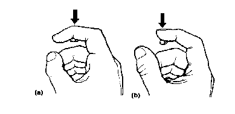
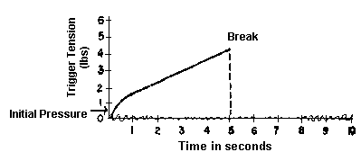
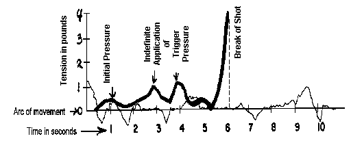
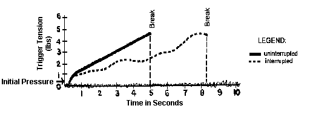

Trigger Control
A. GENERAL.Correct trigger control must be employed in conjunction with all other fundamentals of shooting. The physical act of applying pressure on the trigger to deliver an accurate shot may vary from individual to individual. Proper trigger control for each individual gradually assumes uniformity when the techniques of proper application are mastered. Many shooters, for example, maintain a degree of trigger control with a relatively light grip, while another shooter may use a very tight grip. Some shooters prefer to apply consistent trigger pressure at a rapid rate, while maintaining correct sight alignment. For another shooter, a slower, deliberate application may achieve the same results. An ever increasing number of shooters use the positive approach to trigger control, that is, once it is initiated, it becomes an uninterrupted, constantly increasing pressure until the weapon fires.
Trigger control is of very great importance in producing an accurate shot. When the shooter exerts pressure on the trigger, he must do so in a manner that does not alter the sight alignment, or position of the pistol. Consequently, the shooter must be able to exert smooth, even pressure to the trigger. Furthermore, the trigger must be pressed in conjunction with maximum concentration, peak visual perception of sight alignment and minimum arc of movement.
In order to produce an accurate shot, the shooter must carry out many diverse, but related, actions. Fulfilling this action is compounded by the fact that the pistol is in some degree of motion throughout the period of sighting and aiming. The movement varies according to the stability of the shooter's stance. Consequently, the sight alignment deviates from the aiming area. Often it will move through the aiming area, pausing only for a short period of time in perfect alignment with the target. It is impossible to determine when, and for how long the properly aligned sights will stay in the center of the aiming area. This difficulty is aggravated further by the fact that the shooter is trying to execute coordinated actions when reflex action seeks to contradict them. Such a situation requires the development of conditioned reflexes, and improvement of coordination.
The coordinated action of correct aiming, timely pressure on the trigger, and the correct delivery of the shot is difficult and can be accomplished only by overcoming former uncoordinated reflexes or by acquiring new ones. Only through constant training and attention to accepted techniques can these new reflexes be acquired. The peculiar nature and characteristics of the human nervous system are covered in detail in Annex III entitled, "Processes of the Human Nervous System Relevant to Equilibrium, Trigger Control and Hearing".
B. FACTORS PROVIDING FOR THE CORRECT CONTROL OF THE TRIGGER.
The pressure put on the trigger must come from independent movement of the trigger finger only. The gripping fingers and the thumb do not move or tighten. Keep the grip pressure constant. Align the sight, settle into your normal aiming area and exert positive, uninterrupted, increasing pressure, straight to the rear, until the hammer falls. You must not look for a perfect sight picture combination of rear sight-front sight-bull's eye. Instead, focus your eye on the front sight, keeping it perfectly aligned in the rear sight notch. The blur of the out-of-focus target may move about slightly, but this movement is relatively unimportant. Any time the weapon is fired with good sight alignment within the normal arc of movement and it is a surprise shot, the shot will be a good one, and will hit the target within your ability to hold.
Trigger control has a series of actions that take place if a smooth release of the firing mechanism is accomplished.
1. Slack and Initial Pressure: Any free movement of the trigger, known as slack, has to be taken up prior to a light initial pressure. This action assures that the tolerances in the firing mechanism linkage are taken up and are in firm contact before positive trigger pressure is applied.
Initial pressure is an automatic, lightly applied pressure, approximately one-fourth or less of the total required to fire the weapon. This careful action is an aid in the positive pressure that will release the hammer quickly and smoothly.
In order to fire a controlled shot the shooter must learn to increase the pressure on the trigger positively, smoothly, gradually, and evenly. This does not mean, however, that the trigger must be pressed slowly. It must be pressed smoothly, without interruption, but the release of the trigger must take no more than 2 to 5 seconds. Numerous accurate rapid fire strings of five shots in ten seconds are fired in a cycle that allows only one second or less to employ the principals of correct trigger control.
Smooth trigger action makes special demands on the trigger finger when pressing upon the trigger; its correct functioning determines to a great extent the quality of the shot. The most carefully attained sight alignment will be spoiled by the slightest error in the movement of the trigger finger.
2. Function of Proper Grip: In order for the index finger to be able to perform its function without spoiling the aim, it is first necessary to have the hand grasp the pistol correctly and create the proper support; permitting the trigger finger to overcome the trigger tension. The pistol grips must be grasped tightly but without any tremor. It is also necessary that the index finger clears the side of the stock. The movement of the index finger must be independent as it presses on the trigger, and also not cause any lateral change to the sight alignment.
3. Proper Placement of the Trigger Finger: It is necessary to apply pressure on the trigger with either the first bone section of the index finger, or with the first joint. The trigger must be pressed straight to the rear. If the finger presses the trigger to the side, undesirable things will happen. The weight of trigger pull will increase; because of additional friction on certain parts of the trigger mechanism an otherwise flawless trigger action will take on the characteristics of a poor trigger when side pressure is exerted on the trigger. Another consideration is the effect that side pressure has on sight alignment. Only slight pressure to the side is required to bring about an error in sight alignment. The prime cause of exerting pressure to the side is improper placement of the trigger finger.

Figure 3-1. Correct Placement of the Index Finger on the Trigger. (a) With Joint of Index Finger. (b) With First Bone Section of Index Finger .
Ideal trigger finger placement may be modified to a degree by the requirement that the grip provide a natural alignment of the front and rear sights. The shooter frequently must make a compromise to overcome the undesirable effects of not being able to utilize each factor to full advantage.
4. Coordination: It must be emphasized that match shooting is successful only when all the control factors are consistently in coordination.
Ability to control the trigger smoothly is not sufficient in itself to produce an accurate shot. The trigger must be activated in conjunction with correct sight alignment, minimum arc of movement, and maximum undisturbed concentration. This might be called cadence, rhythm or timing. Under any name, it comes only to those who practice frequently. Occasional ability is not the answer to championship shooting. A three-gun aggregate requires 270 successful results. Consistent, exacting performance is enhanced by an ability to compensate automatically for errors. It is necessary during firing to press the trigger under varying conditions of pistol movement in conjunction with correct sight alignment. In order to apply coordinated pressure on the trigger, the shooter must wait for definite times when all factors and conditions are favorable. Frequently, it will be impossible to exercise maximum control. However, the shooter must never attempt to fire until he has completely settled into a minimum arc of movement.
C. APPLICATION OF TRIGGER PRESSURE.
1. Positive Uninterrupted Trigger Pressure - Surprise shot method - is primarily the act of completing the firing of the shot once starting the application of trigger pressure. The shooter is committed to an unchanging rate of pressure, no speed up, no slowdown or stopping. The trigger pressure is of an uninterrupted nature because it is not applied initially unless conditions are settled and near perfect. If the perfect conditions deteriorate, the shooter should not fire, but bench the weapon, relax, re-plan, and start again.
In instances when the pistol is stable and steady, and the periods of minimum arc of movement are of longer duration, it is immaterial whether the release of the trigger is completed a second sooner or a second later. Anytime that the shot is fired with minimum arc of movement and the sights are in alignment, it will be a good shot. Therefore, when the shooter has established stable minimum arc of movement and sight alignment, he must immediately begin to press on the trigger, smoothly but positively, and straight to the rear without stopping, until a shot is produced. This method of controlling the trigger action will give the shooter a surprise break of the shot before any muscular reflex can disturb sight alignment.

Figure 3-2. Surprise Shot with Positive Uninterrupted Trigger Pressure.
2. Interrupted Application of Trigger Pressure or the "Point" shooting Method: This is a method of trigger control not recommended, although used by some shooters. Some shooters think they can pick the trigger release time even after years of experience.
a. The shooter will align the sights and exert initial pressure on the trigger. He will then make every effort to hold the weapon motionless. During extremely brief moments of motionlessness, pressure is applied on the trigger. If the sight alignment changes and is not perfect, or the arc of movement of the weapon increases, the pressure on the trigger is halted and trigger tension maintained. When sight alignment is again perfect and movement diminishes, pressure on the trigger is resumed until the shot breaks, or after the slack in the trigger is taken up, initial pressure is applied and the shot released by a single swift movement of the trigger finger when there is a decrease in the minimum arc of movement. In this case the presence of perfect sight alignment is not considered essential in initiating trigger action. Abrupt action in applying trigger pressure will disturb the existing sight alignment and other fundamental control factors are subordinated to a minimum arc of movement. The application of all other fundamentals is required regardless of whether or not they are optimum.

Figure 3-3. Application of Trigger Pressure When Based on Perfect Sight Picture.
b, While applying positive trigger pressure straight to the rear, if any thought enters the shooters mind to speed up or slow down this trigger pressure, it will result in the concentration on sight alignment being broken down.
e. The decision to increase the trigger pressure may result in a reflex action commonly known as anticipation and usually results in heeling the shot (The bullet strikes the target at approximately one o'clock). The recoil becomes more imminent and the brain will send a signal for the arm and hand muscles to react prematurely a split second before the shot is fired; resulting in frequent bad shots and low scores.

Figure 3-4. Shot fired With interrupted Trigger Pressure Compared to Shot Fired With Uninterrupted Positive Trigger Control.
D. ERRORS MADE IN TRIGGER CONTROL AND MEANS OF COMBATING THEM.
1. The most serious and disrupting error made by the shooter is jerking - that is, the abrupt application of pressure on the trigger accompanied with muscular action of the hand and arm muscles.
If Jerking was limited to abrupt pressure on the trigger, and the rapid displacement of the axis of the bore, it would cause only part of the results.
a. Jerking is usually accompanied by:
(1) The sharp straining of all the muscles in the arm arid shoulder.
(2) The abrupt tightening of the hand on the grip.
(3) Failure to press the trigger directly to the rear.
All of these factors taken together, lead to a great shifting of the pistol to the side and down and only a very poor shot can result.
b. Most frequently, jerking is observed in new shooters. Usually because of a large arc of movement, favorable moments for producing a good shot are of very short duration.
c. The cause of trigger jerking is the practice of "snatching a ten-pointer", as the expression goes. The shooter tries to fire at the moment when the centered front sight, as it moves back and forth, passes under the lower edge of the bull's eye, or comes to a stop, for a brief time, near the center of the aiming area. Since these moments are fleeting the inexperienced shooter strives to exert all the necessary pressure on the trigger at that time. This rapid and abrupt trigger pressure is accompanied not only by the work of the muscles in the index finger, but also by the sympathetic action of a number of other muscles. The involuntary action of these muscles produces the "jerk", and the inaccurate shot that results. The young shooter, in anticipation of the recoil of the pistol and the loud noise, strains his muscles by flinching, to counteract the anticipated recoil. This is also known as heeling the shot.
d. Practice has shown that a young shooter must be warned sufficiently early in his training about the dangers of jerking the trigger and effective steps taken to instruct him in the correct technique of accurate shooting.
e. Difficulty In detecting errors In trigger control is frequently because the pistol shifted during recoil and errors are not recognized. The shooter has a more difficult time in evaluating than a coach, and often does not realize that he is jerking the trigger, blinking his eyes, or straining his arm and shoulder muscles.
f. The easiest way to correct jerking in the young shooter is by the coaching of an experienced coach. A coach can more readily detect errors and correct habits that will produce poor trigger control. Frequently a shooter does not consider it necessary to prove conclusively whether or not they are jerking on the trigger. It is necessary, though, to know that if he does not get rid of the detrimental habit of jerking on the trigger, he will never succeed in achieving good results.
g. Signs of jerking are an increased in the size of the area of the shot group or shots off to the side which are not called there; chiefly to the left and down (for righthanders). To correct the condition, the shooter must make a change In his training exercise, but in no Instance must he stop them.
(1) Dry-fire practice will enable the nervous system to rest from the recoil of the shot. By this practice some of the reflexes which are detrimental to firing (tensing of the arm In order to counteract the recoil, the straining of the muscles in anticipation of the shot, blinking from the noise of the shot), are not being developed. They will, In fact, begin to decrease and may completely disappear.
(2) Secondly, the shooter may continue regular training, but occasionally he may practice "dry". This way, he will not lose the stability of this position, as well as the useful reflexes which the shooter has developed during the process of previous firings.
{3) By aiming carefully and noting attentively everything that happens to the pistol when he presses on the trigger, the shooter will discover his errors and eliminate them. Training by means of ball and dummy and dry firing is of great benefit. It makes it possible to develop correctly and carefully the technique of pressing the trigger, and contributes to acquiring proper habits In controlling the trigger.
{4) When beginning to use dry firing the shooter must first overcome the desire to "grab" for a shot when the centered front site is under the bull's eye. Despite the arc of movement the shooter must teach himself only to press smoothly on the trigger and to use the uninterrupted positive control method of trigger action. When the smooth control of the trigger again becomes habitual and he no longer has to devote special attention to it, he can again shoot live cartridges. After starting again to shoot live cartridges, the first training exercises should involve firing at a square of blank white paper, rather than at a target with a black aiming area. Simultaneously, the shooter must devote special attention to analyzing his performance, counteract the desire to jerk on the trigger, and be conscious of reacting incorrectly to the firing of a shot.
2. Another error committed by a shooter when controlling the trigger is "holding too long", that is, the drawn out action of pressing the trigger.
a. A consequence of holding too long is that the shooter does not have enough air to hold his breath, his eye becomes fatigued, and his visual acuity decreases. In addition, his stance loses part of its stability. Consequently, when he holds too long, the shooter presses on the trigger under unfavorable conditions.
b. Holding too long is a consequence of excessively slow and cautious pressure on the trigger. This is caused by the shooter's fear of producing a bad shot. Such indecisiveness and over caution may be regarded as the opposite of jerking. Moreover, holding too long stems from the lack of coordination of movement which frequently occurs during those stages of training when the process of inhibition outweighs the process of stimulation. Simply stated, the shooter cannot force himself to exert positive pressure on the trigger at the proper time. One favorable moment after another goes past, and soon the chances for an accurate shot are gone. Naturally, the trigger control phase has been extended far beyond its effective duration. This situation frequently occurs after a period of dry-fire training exercises. The shooter loses the sense of the trigger's true weight when he fires for extended periods of time with a round in the chamber. When the trigger is released in a dry shot, the trigger seems to be rather light, but when the shooter switches to live rounds, the trigger weight seems to be considerably greater. He feels he must exert greater effort to overcome this seemingly greater weight. Frequently, the shooter will blame his troubles on faulty adjustment of the trigger mechanism. Nothing is gained from such assumptions. More times than not, the shooter returns to normal trigger control since the root of the evil is lack of coordinated control and not trigger adjustment.
e. The restoration of coordination of movement, and the return to the correct balance between stimulation and inhibition is brought about primarily through systematic practice, match training and dry-fire exercises. It is precisely this method of training which develops the necessary coordination of the shooter's actions. When the shooter's movements become automatic, the trigger finger will operate in an unstrained manner, and the shot will break at the proper moment. It is important that each training session begin with a few dry-fire exercises. It has been demonstrated that such exercises are necessary for the development of accurate shooting. Such exercises may also be repeated after record shooting to restore equilibrium in the nervous processes.
d. Frequently, a shooter, when firing for record, is unable to fire a shot. After several unsuccessful tries, a loss of confidence will arise. Rather than risk a wild shot the shooter should unload the pistol, time permitting, and dry-fire a few shots. After restoring coordination of movement, and regaining his confidence, the shooter is far better prepared, both physically and mentally, for the delivery of an accurate shot. Firing the shot during the first few seconds after settling into a good hold, will guarantee confidence.
3. We have considered the fundamental errors that arise in trigger control. Let us now consider a problem that is also closely related to trigger control - trigger adjustment.
a. The firing of an accurate shot depends to a great extent on the quality of the trigger adjustment. An incorrectly adjusted trigger aggravates the errors committed by the shooter as he exerts pressure on the trigger. Incorrect adjustments include:
(1) Excessive trigger weight.
(2) Excessive long creep (movement of trigger).
(3) Too light trigger weight.
(4) Variable trigger weight.
b. The shooter should not try to overcome these difficulties with modification in his trigger control but take the problem and pistol to the armorer (gunsmith) for solution.